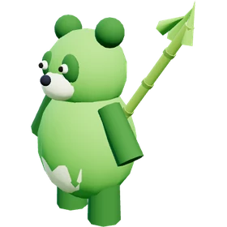
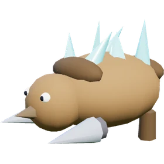
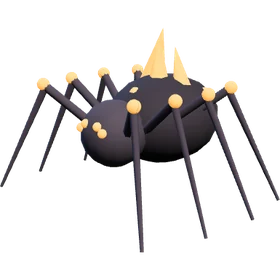
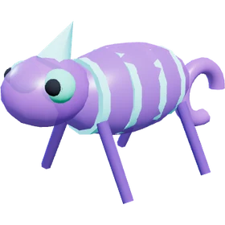
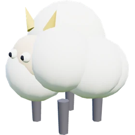
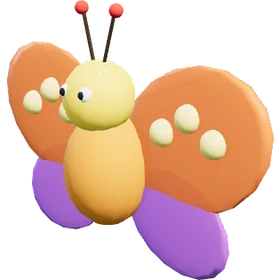
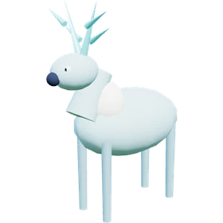
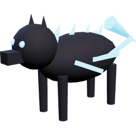
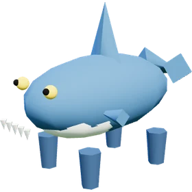
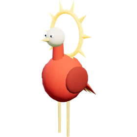

Десять видів попалів. Ослаб істоту, кинь кулю — і вона стане твоїм помічником у бою чи працівником на базі.

Бамбузл
🌿 ТраваДобродушна панда з бамбуковим списом.
- 🪓 Рубає дерева
- 🫐 Збирає ягоди й гриби

Грумрок
💎 ЗемляБроньований копач із кристалами на спині.
- ⛏️ Добуває камінь
- 📦 Носить вантажі

Ігніс-Виверг
🔥 ВогоньВогняний павук. Нападає першим, тож бережіть здоровʼя.
- 🔩 Плавить руду в плавильні
- 🍳 Готує на кухні-багатті

Міражбр
👻 ТемряваНапівпрозорий хамелеон, ловиться легше за інших.
- 📦 Найкращий носій: годує бригаду

Пухоклуб
⚪ НейтральнийХмаринка-овечка з золотими ріжками.
- 🫐 Збирає ягоди й гриби
- 📦 Носить вантажі

Крилоша
🌪️ ПовітряМетелик-фея з чотирма крилами.
- 🫐 Найкращий збирач урожаю

Мороріг
❄️ Вода й лідКрижаний олень з кришталевими рогами.

Грозовик
⚡ Темрява й повітряЧорний вовк з неоновими блискавками. Нападає першим.
- 📦 Носить вантажі
- 🪓 Рубає дерева

Хвилезуб
💧 ВодаСухопутна акула на лапках.

Сонцеклюв
☀️ Вогонь і повітряВисокий птах із сонячним вінцем за головою.
- 🔩 Плавить руду в плавильні
- 🍳 Готує
- 📦 Носить
 Popal
Popal